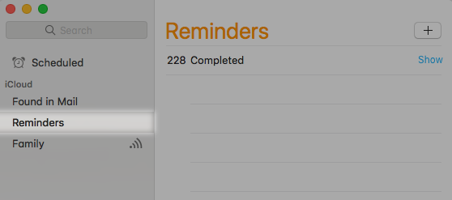

How To Use the Reminders Application on macOS

Reminders is an application native to OSX. You can use it to schedule tasks and assign them to specific dates and times. The application will remind you of the task at the specified times.
This document explains how to create a new reminder and assign it to a date and time.
Create a new reminder
1) Launch the Reminders application.
2) In the Reminders window, locate the left-side menu and ensure the Reminders option is selected.

3) On the top-right corner of the Reminders window, click the button to add a new reminder. A new task entry will appear indicated by an open white circle. Type a brief description of the task and press the Enter key. To cancel adding a new task, press the Escape key.
4) Select the task entry and click the information icon that appears on the right. A dialog box containing the selected task's information will appear on the right side of the Reminders window.
5) Within the dialog box, check On a Day. A date and time entry will appear.
6) Click on the date entry to open the calendar dialog box and select the date of the task. Then click the time entry and type in the hour and minute the task.
7) If the task needs to be repeated, click the repeat option. It will provide the following options:
- Every Day
- Every Week
- Every Month
- Every Year
- Custom
8) Click Done to close the dialog box.
At the specified date and time you set your reminder, the Reminders application will produce a small pop-up dialog box at the corner of your screen containing your task description, as shown below:
You can close the reminder by clicking Complete. You can also delay the reminder by clicking Later and then selecting a delay time.